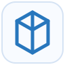

SRV
Server & Infrastructure Support
Windows and Linux servers, Active Directory, DNS, DHCP, migrations, backup, recovery, and hardware support.
Learn More →IT INFRASTRUCTURE & BUSINESS TECHNOLOGY SOLUTIONS
Multivision Technology delivers reliable support for servers, networks, firewall security, secure VPN access, Citrix, Odoo ERP, cloud infrastructure, and business-critical technology environments.
TECHNOLOGY BUILT AROUND YOUR BUSINESS
Technology should make your business more productive, not more complicated. At Multivisiontechnology, we bring together IT infrastructure, network management, cybersecurity, cloud services, business software, web solutions, VPS hosting, and technical support under one technology partner.
Our goal is to provide technology that is secure, scalable, reliable, and aligned with your business needs.
About Multivisiontechnology →IT SERVICES & SOLUTIONS
Clear services for the infrastructure, security, software, and operations your organization relies on.
Windows and Linux servers, Active Directory, DNS, DHCP, migrations, backup, recovery, and hardware support.
Learn More →Cisco networking, FortiGate support, routing, switching, wireless, remote-site connectivity, and troubleshooting.
Learn More →OpenVPN, WireGuard, firewall VPNs, MFA, Citrix access, and secure connectivity for users and locations.
Learn More →Odoo ERP installation, configuration, user access, updates, backups, technical support, and infrastructure integration.
Learn More →Firewall and access security, network segmentation, backup checks, recovery planning, and maintenance.
Learn More →Support for manufacturing systems, plant applications, migration activities, validation, and critical operations.
Learn More →EXPERIENCE THAT MATTERS
Multivision Technology brings extensive hands-on experience supporting infrastructure, networks, servers, remote operations, manufacturing systems, and business applications.
TECHNOLOGIES WE SUPPORT
Our team supports server infrastructure, networking, secure remote access, business applications, and critical operations.

Microsoft 365These are original technology-category illustrations created for Multivision Technology. Product names and brands are property of their respective owners; their mention identifies technologies we support and does not imply endorsement, affiliation, or partnership.
HOW WE CAN HELP
Whether you need help today or want to improve your environment for tomorrow, our team is ready to help.
Windows or Linux server support, upgrades, migrations, access issues, backup checks, and recovery assistance.
Troubleshooting for switches, routers, firewalls, wireless connectivity, remote sites, and performance issues.
Secure remote-user and site-to-site access with firewall VPNs, OpenVPN, WireGuard, MFA, and Citrix support.
Odoo installation, server setup, access management, updates, backups, and technical troubleshooting.
WHY MULTIVISION TECHNOLOGY
We combine practical technical expertise with clear communication, dependable support, and solutions designed around your operations.
Technology services aligned with your operations, users, security needs, and growth plans.
Security, backup, remote access, and operational continuity are considered throughout every solution.
Clear troubleshooting, documentation, and practical next steps when your business needs help.
HOW WE WORK
Learn about your business, challenges, and goals.
Evaluate your environment, risks, and opportunities.
Develop the right technology solution.
Deploy and configure required systems.
Support, monitor, maintain, and optimize.
Help your environment evolve as you grow.
LET'S BUILD A BETTER TECHNOLOGY ENVIRONMENT
Get help with servers, networks, firewalls, VPN access, Citrix, Odoo ERP, backup, and control-system support.